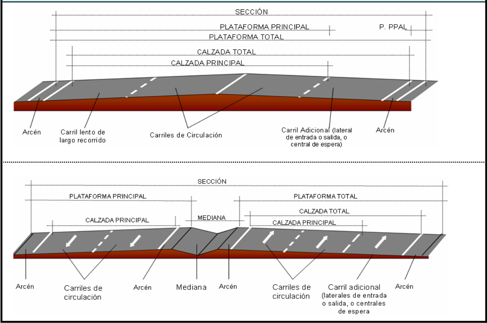
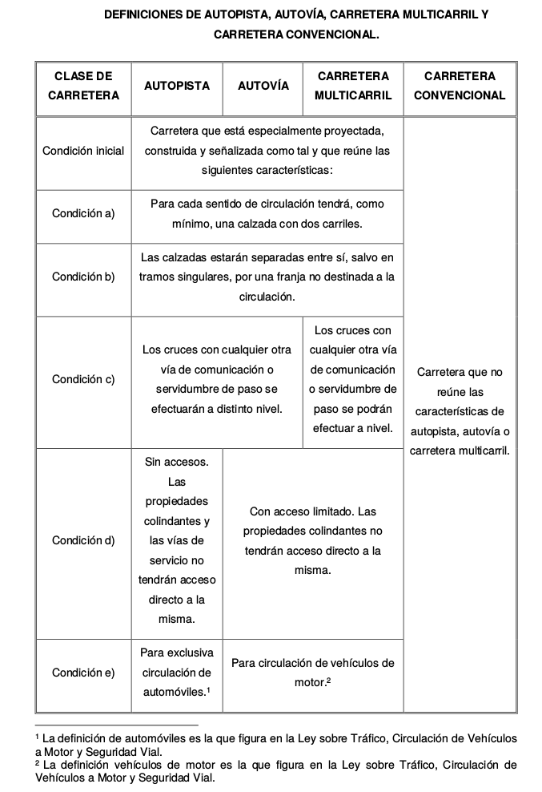

2. Trazado de caminos¶
El camino constituye una franja lonogitudinal que puede ser definida mediante la proyección en plante de su eje longitudinal, el alzado de este eje y una serie de secciones transversales.
2.1. Planta y alzado¶
La planta del camino está constituida por una sucesión de alineaciones rectas enlazadas entre sí por alineaciones curvas. Las alineaciones curvas están formadas por arcos circulares con distintos radios y por unas curvas de transición que permiten una variación gradual de la curvatura.
El alzado, o perfil longitudinal, está constituido por una sucesión de alineaciones de pendiente constante, positiva o negativa, enlazadas por acuerdos parabólicos, que permiten una variación lineal de la pendiente. A las alineaciones del perfil longitudinal se les denomina rasantes, dejando el término alineaciones para su uso en la planta del camino. Las rasantes de inclinación constante reciben el nombre de rampas, cuando la inclinación es positiva (ascendente), y de pendientes cuando la inclinación es negativa (descendente).
Los elementos del alzado y de la planta se diseñan de modo que los vehículos puedan recorrerlos con una velocidad adecuada. Esta velocidad se denomina velocidad específica de cada elemento, y es la máxima velocidad que puede mantenerse en condiciones de seguridad y de comodidad cuando las circunstancias meteorológicas y del tráfico no obligan a limitar esa velocidad. La velocidad de proyecto de un tramo homogeneo es la minima de las velocidades específicas de los elementos que componen el tramo.
2.2. Sección transversal¶
La sección transversal está integrada por los siguientes elementos: + Calzada: es la zona de la carretera destinada normalmente a la circulación de los vehículos. La calzada se considera dividida en franjas horizontales, cada una de las cuales permite la circulación de una sola fila de vehículos. Estas franjas se denominan carriles y se distinguen mediante líneas pintadas en el pavimento. + Arcén: es la franja longitudinal pavimentada, no destinada a la circulación de vehículos, comprendida entre el borde exterior de la calzada y el borde de la plataforma. Sirve para que los vehículos realicen paradas breves fuera de la calzada y para poder rectificar la trayectoria en el caso de salirse inadvertidamente de la calzada. + Berma: franja longitudinal de la carretera comprendida entre el borde exterior del arcén y la cuneta o el terraplén. Es utilizada para colocar la señalización, el balizamiento, las comunicaciones, las barreras de seguridad y otros elementos.
Al conjunto de la calzada y de los arcenes se le denomina la plataforma de la carretera. Hay carreteras formadas por una sola calzada, con dos o más carriles, por los que circulan vehículos en sentidos opuestos. Hay otras carreteras que disponen de dos calzadas separadas, una para cada sentido de circulación. En este último caso, la ranja de terrenoque separa las dos alzadas se denomina mediana.
En algunos tramos de carreteras se destina una parte de la calzada a usos especiales. Normalmente, en estos tramos, se ensancha la calzada creando un nuevo carril que se destina a un uso específico. Así se habla de carriles de cambio de velocidad, para facilitar las incorporaciones o las salidas de la carretera, o tambień de carriles adicionales para circulación lenta, en el caso de las rasantes con fuerte inclinación. Existen también carriles adicionales para circulación rápida, cuyo objetivo es facilitar los adelantamientos.
{kind=link}
2.3. Nudos viarios¶
Las zonas donde concurren varias carreteras o calles, y es posible pasar de unas a otras, constituyen los denominados nudos viarios. Son puntos críticos, pues en ellos coinciden vehículos con distintas direcciones, originándose conflictos en los puntos de encuentro de sus trayectorias. Se denominan intersecciones los nudos en los que los movimientos se realizan al mismo nivel y se denominan enlaces cuando no sucede esto.
Las intersecciones pueden constar de tres, cuatro o más tramos. A las de tres tramos se les denomina intersecciones en T*; a las de cuatro tramos se les denomina intersecciones en cruz. Hoy en día también es frecuente el uso de intersecciones mediante glorietas, en las que todos los vehículos que acceden a la intersección giran alrededor del centro de la misma.
En los enlaces se utilizan unos tramos denominados ramales, que unen las vías que se cruzan salvando el desnivel existente.
2.4. Tipos de vías¶
Atendiendo a las características esenciales, se pueden distinguir las siguientes clases de vías: + A) Según la indenpendencia de sus calzadas:
- Carretera de calzadas separadas: Es la que tiene calzadas diferenciadas para cada sentido de circulación, con una separación física entre ambas. Puede tener más de una calzada para cada sentido de circulación.
- Carretera de calzada única: Es la que tiene una calzada para ambos sentidos de circulación, generalmente sin separación física. Puede tener, excepcionalmente,un sentido de circulación.
- B) Según el grado de control de accesos:
- Sin accesos directos (abreviadamente sin accesos): Es aquella carretera en la que las entradas o salidas se realizan exclusivamente a través de nudos
- Con accesos directos limitados (abreviadamente con accesos limitados): Es aquella carretera en la que las entradas o salidas se pueden establecer a través de nudos o a través de vías de servicio con conexiones específicas
- Con accesos directos (abreviadamente con accesos): Es aquella carretera en la que no existen las limitaciones establecidas en los dos párrafos anteriores
- C) Según las condiciones orográficas: Según la norma española, se tipificarán las carreteras según el tipo de relieve del terreno natural atravesado (Ver la tabla siguiente), en función de la inclinación media de la línea de máxima pendiente en valor absoluto, correspondiente a la franja original de dicho terreno interceptada por la explanación de la carretera.
{kind=link}
- D) Según las condiciones del entorno urbanístico:
- Carretera interurbana
- Tramo periurbano de carretera (o carretera periurbana)
- Tramo urbano de carretera (o carretera urbana)
- E) Según la funcionalidad del sistema viario:
- Carretera de calzadas separadas:
- Autopista
- Autovía
- Carretera multicarril
- Carretera de calzada única:
- Carretera convencional
- Otros tipos:
- Carretera de sentido único de circulación
- Vía colectora - distribuidora
- Vía lateral (también denominada calzada lateral)
- Ramal
- Vía de giro
- Vía de servicio
- Carretera de calzadas separadas:
En general se aceptan las siguientes definiciones:
- Autopistas: con dos calzadas separadas, una para cada sentido de circulación, y que además reunen otros requisitos que se detallan más adelante.
- Carreteras convencionales: una única clazada con un carril para cada sentido de circulación. En algunos tramos puede haber algún carril adicional.
- Carreteras multicarril: con dos o más carriles por sentido, distribuidos en una o más calzadas, pero que no cumplen todos los requisitos para ser consideradas autopistas.
Las autopistas son vías que están especialmente diseñadas, construidas y señalizadas como tales para la circulación específica de vehículos automóviles y satisfacen los siguientes requisitos:
- No tener acceso directo a ellas las propiedades colindantes
- No cruzar ni ser cruzada a nivel por ninguna otra senda, vía o línea de ferrocarril
- Constar de distintas calzadas para cada sentido de circulación, separadas entre sí, salvo en puntos singulares o con carácter temporal, por una franja de terreno no destinada a la circulación.
En España reciben la denominación de autovías las carreteras que, no reuniendo todos los requisitos exigidos a las autopistas, tienen calzadas separadas para cada sentido de circulación y limitación de acceso a las propiedades circundantes.
{kind=link}
2.5. Vías urbanas¶
En las redes urbanas de las zonas metropolitanas se emplean autopistas y autovías que cumplen las mismas condiciones que las interurbanas, aunque tienen algunas características diferentes, ya que en ellas se circula a menor velocidad que en las vías interurbanas y las intersecciones están a menor distancia.
Tambień es frecuente utilizar vías con calzadas separadas para cada sentido de circulación, pero con intersecciones mediante glorietas o semáforos. Se utilizan también calles con sentido único, en las que todos los carriles se destinan a un sentido de circulación. Las calles que tienen una calzada única con doble sentido de circulación tienen con frecuencia más de dos carriles, que se distribuyen entre ambos sentidos mediante marcas viales.
En las vías urbanas hay numerosos puntos en los que se producen conflictos entre los tráficos de vehículos y de peatones.
Una diferencia importante entre las redes de vías urbanas y las interurbanas es el mayor número de nudos que hay en las primeras. Mientras que en las redes interurbanas el nivel de servicio de la circulación vienen determinado por el que se consigue en los tramos entre nudos, en las redes urbanas es el funcionamiento de los nudos el que determina la calidad de la circulación.